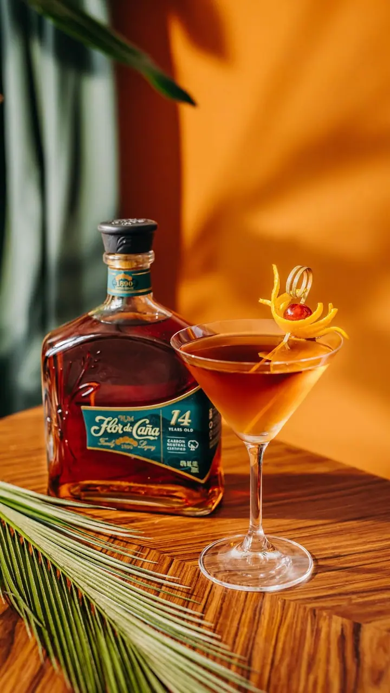
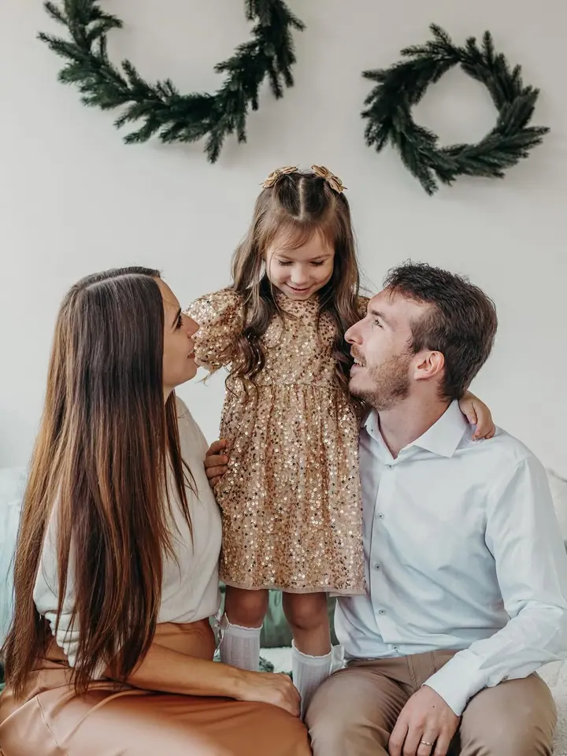
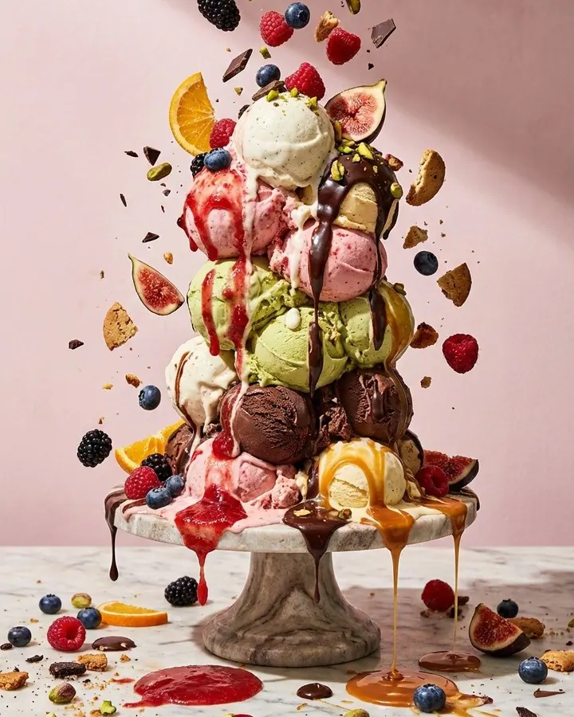
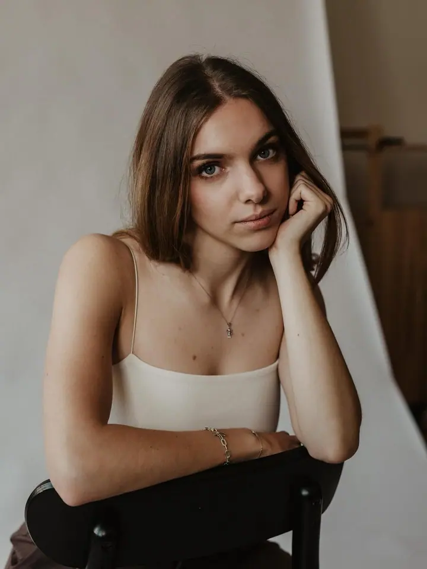
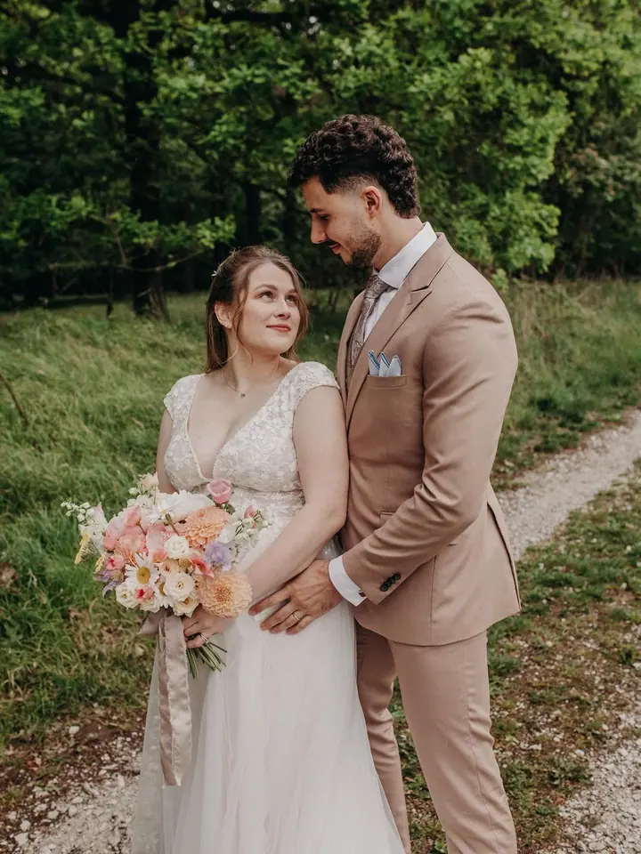
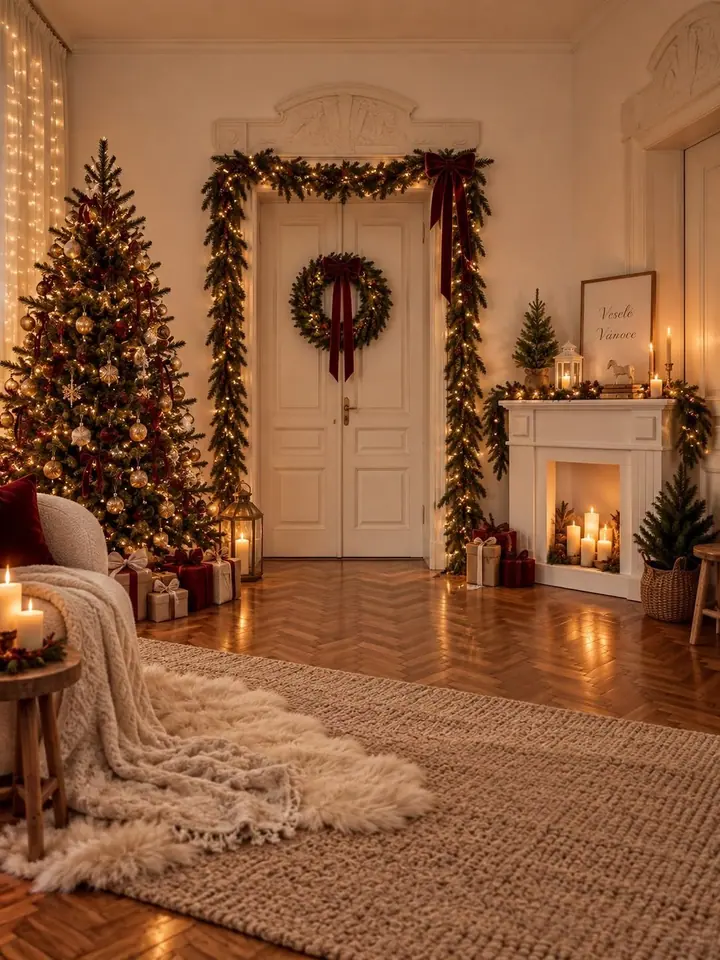
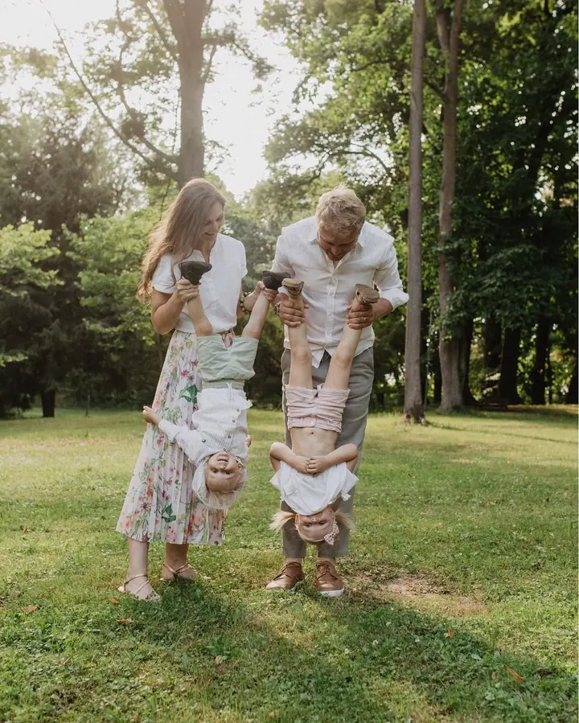
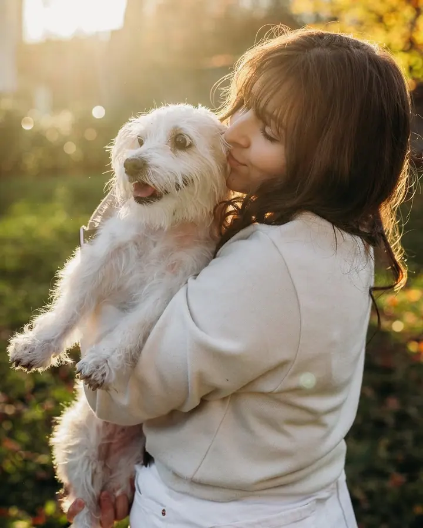

01 / 04
Reklamní a produktové focení
Produktové, lifestyle a food & drinks fotky, které nejen dobře vypadají, ale hlavně prodávají. Ke každému záběru přidávám kreativitu a marketingové know-how.
Zeptat se na termín→







Vizuál, který nepřehlédnete
Zeptat se na termín →(01) Ahoj
Jmenuji se Bára Žuchová a ve svém studiu v ostravském Brickhousu fotím produkty a reklamu pro značky, které chtějí být vidět. Stejně ráda ale fotím svatby a rodiny , vždycky s důrazem na chvíle, které jsou opravdové.
224příspěvků s fotkami a příběhy
(02) Co dělám
01 / 04
Produktové, lifestyle a food & drinks fotky, které nejen dobře vypadají, ale hlavně prodávají. Ke každému záběru přidávám kreativitu a marketingové know-how.
Zeptat se na termín→02 / 04
Fotím spíš reportážně, přirozeně a bez strojených póz. Víc než dokonalá kompozice mě zajímají opravdové momenty vašeho dne.
Zeptat se na termín→03 / 04
Bez řazení do řady a úsměvů na povel. Fotím venku i v ateliéru, včetně těhotenského a oblíbeného vánočního focení.
Zeptat se na termín→Dále nabízím
Reklamní a produktová videa i krátké reels pro sociální sítě. Natáčím i svatební video.
↗(04) Postup
Od první zprávy po hotovou galerii.
Krok 1 z 4
Napište mi nebo se zastavte na kávu do studia. Probereme vaše představy, ať jde o kampaň pro značku, svatbu, nebo rodinné focení.
Krok 2 z 4
U značek hledám jejich esenci a podle ní připravím kreativní koncept. U svateb se potkáme na předsvatební schůzce, u rodinného focení vám poradím s oblečením i místem.
Krok 3 z 4
Fotíme v mém studiu v Brickhousu nebo venku. Pózovat umět nemusíte, s tím vám ráda pomůžu.
Krok 4 z 4
Pracuji rychle, abyste mohli fotky co nejdřív použít. Fotky dostanete v elektronické podobě v soukromé online galerii.
Fotka by neměla být jen hezká, ale měla by mít smysl.
(05) Za objektivem
K fotografii jsem se dostala trochu netradičně, z druhé strany objektivu. Šest let jsem pracovala jako modelka a spolupracovala s módními domy jako Dior, Chanel nebo Calvin Klein. Tam jsem pochopila, jak funguje svět vizuálu a co dělá fotku opravdu dobrou.
Fotím od roku 2012. Začala jsem produktovou fotografií, postupně mě to ale táhlo i k rodinnému a svatebnímu focení. Díky marketingovému přesahu vím, že fotka by neměla být jen hezká, ale měla by mít smysl. Ať jde o zachycení důležitého momentu, nebo o vizuál, který prodává.
Tvořím ve svém ateliéru v Brickhousu v Dolní oblasti Vítkovic, kde mám profi techniku, spoustu prostoru a krásné denní světlo. A když zrovna nefotím, nejspíš běhám po horách se svými třemi border koliemi a dvěma dětmi, nebo přemýšlím, kam si střihnu další tetování.
Bára
Bára Žuchová · Produktová a reklamní fotografka
Ceny jsou individuální podle rozsahu a konceptu. Napište mi nebo zavolejte a připravím vám nacenění.
Mám tři balíčky: Na pohodu (5 hodin focení) za 15 000 Kč, Srdcovka (8 hodin) za 25 000 Kč a Celý příběh (10 hodin) za 35 000 Kč. Součástí je předsvatební schůzka a soukromá online galerie.
Rodinné focení stojí 3 500 Kč. Zahrnuje 45 až 60 minut focení, 50 až 70 fotografií v elektronické podobě a soukromou online galerii. Doprava v rámci Ostravy, Šenova a Havířova je zdarma.
Vůbec ne. Stačí přijít a užít si chvíli spolu, se zbytkem vám ráda pomůžu. Jsem extrovert a ráda si s lidmi povídám, takže fotky vznikají uvolněně.
(07) Kontakt
Napište pár vět o tom, co si představujete, a termín, který se vám hodí.
bara@zuchova.cz